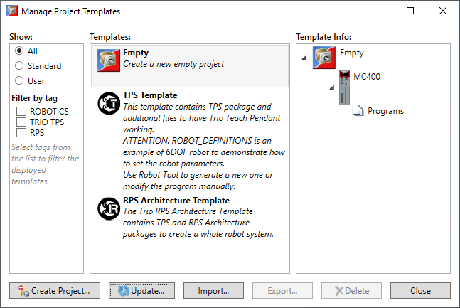

The installed templates can be managed using the template manager tool which is available by selection “Project”→”Templates”→”Project Templates” from Motion Perfect’s main menu.

The template list can be filtered by selecting a filter option.
|
Filtering Option |
Description |
|
All |
Displays all the available templates |
|
Installed |
Displays only the templates that come installed with Motion Prefect |
|
User |
Displays only the user-created or imported templates |
|
Button |
Description |
|
Create project... |
Creates a new project from the selected template. |
|
Update |
Check for online updates or update from a file. |
|
Import |
Imports a template from a file. Multiple items can be imported in one operation. |
|
Export |
Exports the selected template to a file. |
|
Delete |
Removes the selected templates from the system. |
|
Close |
Closes the template manager window. |